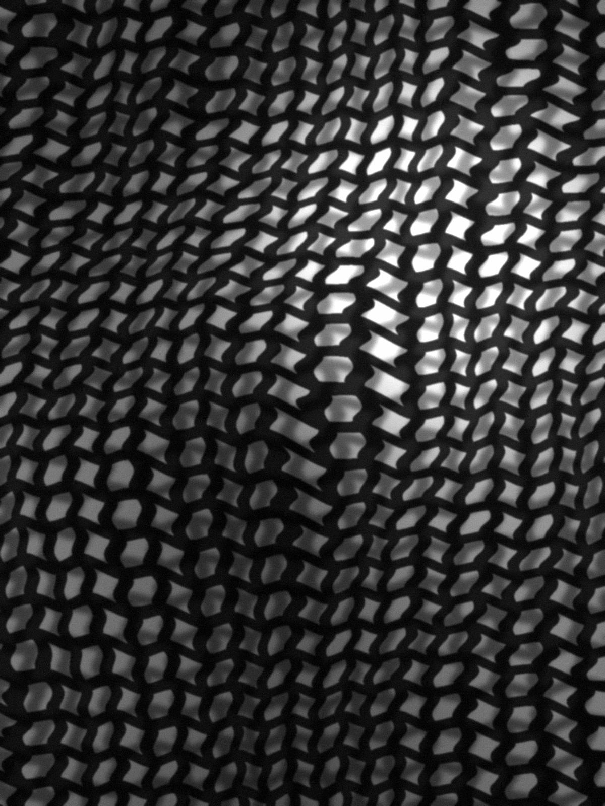
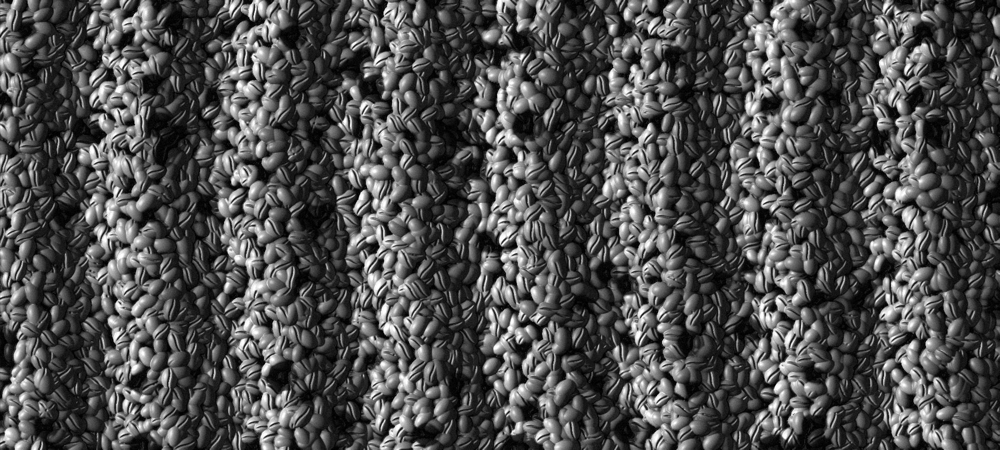

Contents
Every month we roast two small-lot coffees, ship them within 48 hours of roasting, and tuck in notes on who grew them. October’s pair: washed SL28 and SL34 from Kiambu, Kenya, and a honey-process Caturra from Huila, Colombia.
- Roasting
- Monday 12 October 2026
- Batch
- 041, 18 kg
- Ships by
- Wednesday 14 October
- Next lots announced
- 2 November
Lot oneKiambu, KenyaSL28 and SL34Washed1,800 m
The hills north of Nairobi
Our first October coffee comes from smallholder families in Kiambu, just north of Nairobi. It is bright, it is juicy, and we roast it light so you can taste where it came from.
Kiambu’s coffee doesn’t come from one big estate. It comes from many family plots in the hills. Each family picks its ripe cherries and delivers them to a cooperative washing station, where the coffee from all those small farms is processed.
At the station the coffee is washed: the fruit is taken off before the beans are dried, which tends to leave a clean, clear cup. This lot is two varieties, SL28 and SL34, grown at 1,800 metres.
We roast it light, on purpose. Brew it and look for blackcurrant first, then grapefruit, with cane sugar underneath. If you take two bags this month, drink it next to the Huila and taste how differently the two were grown and dried.
Ripe cherries, carried in by smallholder families, to a washing station in the hills.
- Variety
- SL28 and SL34
- Process
- Washed
- Altitude
- 1,800 m
- Roast
- Light
- Tastes of
- blackcurrant, grapefruit, cane sugar
Lot twoHuila, ColombiaCaturraHoney process1,750 m
Two weeks under shade cloth
Our second coffee is grown on a family farm in Huila, Colombia, and dried slowly: on raised beds, under shade cloth, for about two weeks.
It is a honey process. The skin of the cherry comes off, but some of the sticky fruit stays on the bean while it dries. Done slowly, in shade rather than full sun, that takes patience. The coffee is Caturra, grown at 1,750 metres, and we roast it medium-light: expect red apple and panela, with cocoa nib at the finish.

- Variety
- Caturra
- Process
- Honey
- Altitude
- 1,750 m
- Roast
- Medium-light
- Tastes of
- red apple, panela, cocoa nib

Four ways to brew
Tell us how you brew and we grind for it. Or take it whole bean and grind it yourself. Every bag comes with a recipe card.
- FilterMedium grind, for pour-over and batch brewers
- EspressoFine grind
- Moka potFine to medium grind
- French pressCoarse grind
Two coffees a month, roasted to order
One bag
€14/month
250 g, alternating between the two coffees.
Two bags
€26/month
2 × 250 g: both coffees, to taste side by side.
Whole bean, or ground for filter, espresso, moka pot or French press.